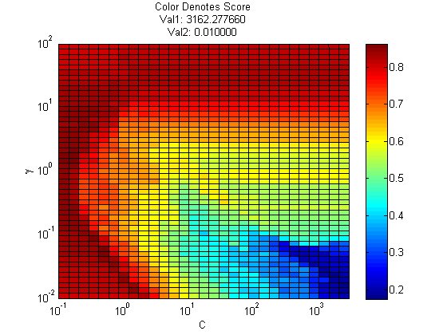

Contents
Run an svm on a binary dataset
load crabs
SVM
gammas = logspace(-2, 2, 50);
Cvals = logspace(-1, 3.5, 30);
cvopts = {5, false, true}; % {nfolds, useSErule, doPlot}
model = svmFit(Xtrain, ytrain, 'kernel', 'rbf', ...
'C', Cvals, 'kernelParam', gammas, 'cvOptions', cvopts);
yhat = svmPredict(model, Xtest);
nerrors = sum(yhat ~= ytest) %0
set(gca, 'xscale', 'log', 'yscale', 'log');
xlabel('C');
ylabel('\gamma');
nerrors =
0
